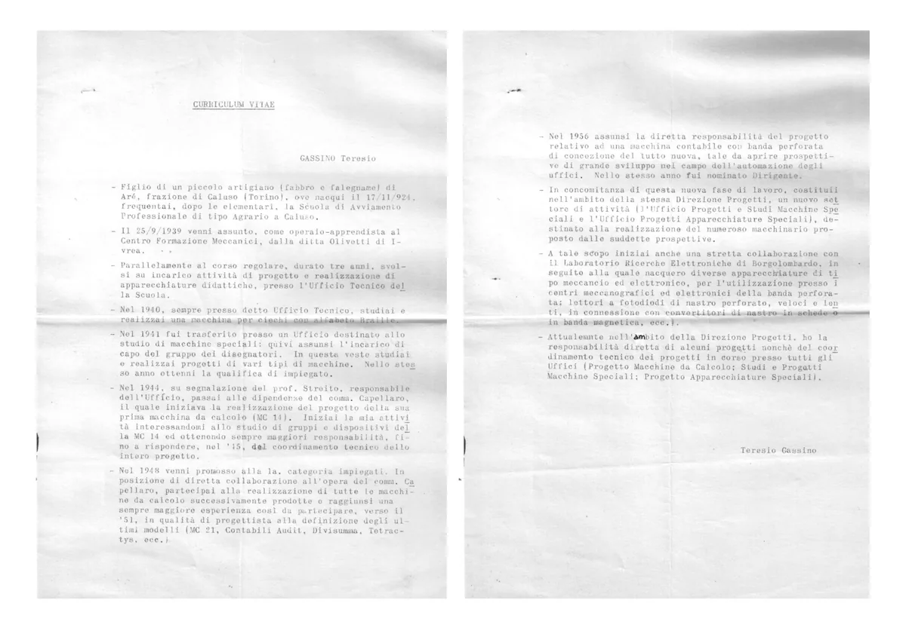
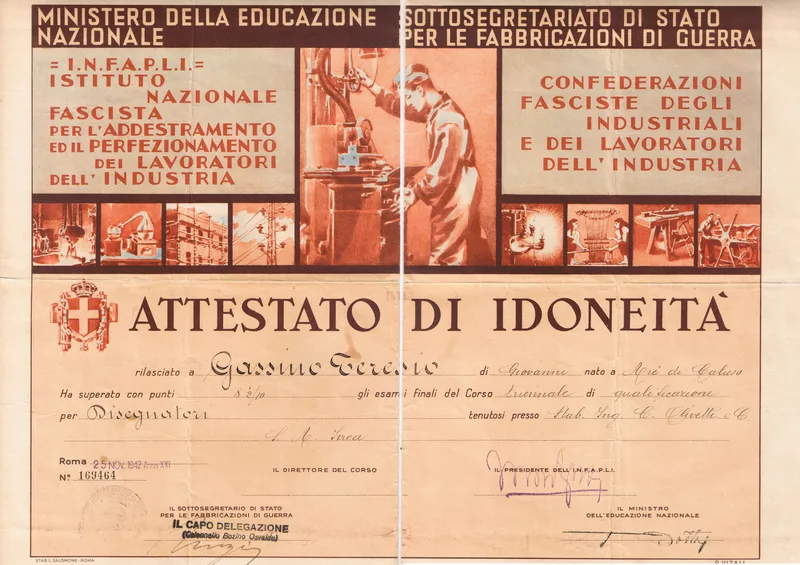
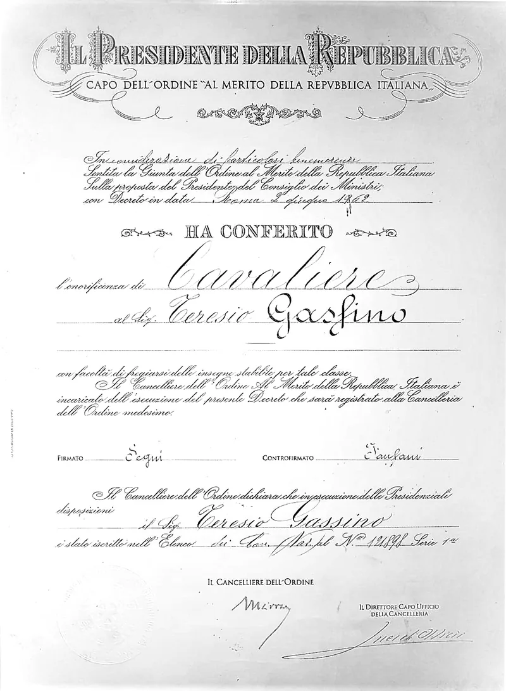
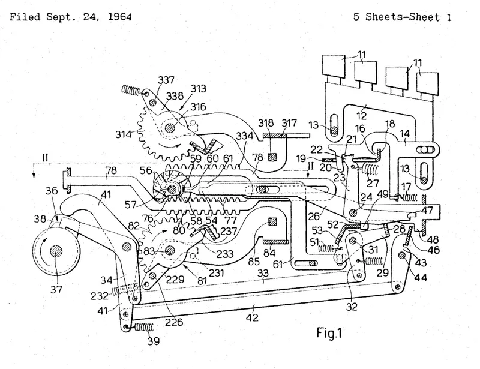

Curriculum
La carriera, da allievo del CFM Olivetti a Direttore Centrale.

PDFCurriculum vitae
Curriculum vitae compilato da Teresio presumibilmente in un momento successivo alla nomina a Dirigente del 1956, quando è responsabile del coordinamento tecnico dei progetti in corso presso tutti gli uffici (Progetto Macchine da Calcolo, Studi e Progetti Macchine Speciali, Progetto Apparecchiature Speciali) e responsabile diretto di alcuni dei progetti.
Fonte: archivio personale.

⤢ IngrandisciDiploma del Centro Formazione Meccanici
Nel 1942 consegue la qualificazione di Disegnatore presso il Centro Formazione Meccanici Olivetti.
Fonte: archivio personale.

⤢ IngrandisciOnorificenza di Cavaliere
Nel 1962 è nominato Cavaliere dell’Ordine al Merito della Repubblica Italiana.
Fonte: archivio personale.

↗ LinkBrevetti
Brevetti di Teresio depositati presso l’Ufficio brevetti degli Stati Uniti (pdf del brevetto e anno di concessione accanto al nome).
- 3,260,449, 1966, Zero printing control device for a calculating machine.
- 3,319,882, 1967, Ten key calculating machine.
- 3,331,556, 1967, Power driving device for a calculating machine.
- 3,370,788, 1968, Program control device for a calculating or like machine.
- 3,397,837, 1968, Printing calculating machine having a transversely movable register.
- 3,423,018, 1969, Ten key calculating machine adapted to effect multiplications as well as divisions.
- 3,451,616, 1969, Automatic shortcut multiplication device for a calculating machine.
Fonte: Spezial:Patentpage for “Olivetti”, Rechnerlexikon, Patent Search for “inventor:Gassino Teresio”, Espacenet, consultati nell’agosto 2026.